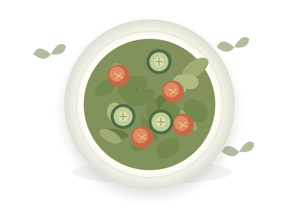

A LITTLE INSPIRATION. A BETTER EVERYDAY.
Good food.
Your ingredients.
Your way.
Make something lovely with what you have. Discover feel-good recipes that fit your kitchen and your way of eating.
Find your next favorite✦Thoughtfully simple.
Always full of flavor.
Always full of flavor.

✦
A bowl of possibilitiesFresh ideas, made for you.
♡A little care
in every bite.
GOOD INGREDIENTS. GREAT LITTLE MOMENTS.in every bite.
Made for your lifestyle
Vegan and gluten-free ingredient options.
Know what’s in your bowl
Estimated calories, protein, carbs and fat.
Less waste. More possibility.
Start with the ingredients you already have.
SOMETHING GOOD STARTS HERE
A little kitchen inspiration.
Nutrition is an approximate calculation from generic ingredient estimates, not verified laboratory or branded-product data. Preparation and products change the values.
Good food starts with a little curiosity.
Open your kitchen. Find your inspiration. Make something good.